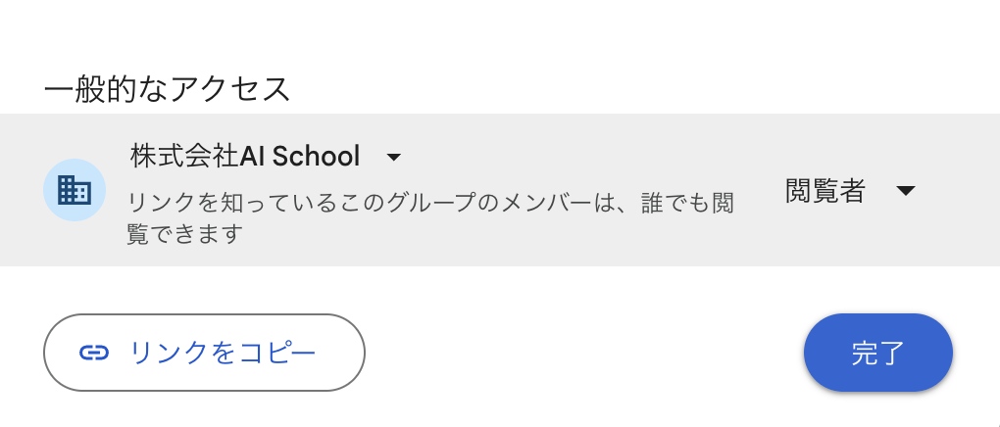

モジュール6 まとめ演習：AIエージェント実装ケーススタディ ─ 卒業後に使えるポートフォリオ1枚
🔴 提出方法（最重要）
本課題は
AI+のGoogleアカウント（株式会社AI School）で作成したGoogleドキュメント で提出します。
共有設定は必ず
「株式会社AI School（リンクを知っているこのグループのメンバーは、誰でも閲覧できます）」 に変更してください。設定画面は以下のようになっていればOKです。

共有設定の確認：「一般的なアクセス」が株式会社AI School、権限が閲覧者になっていること
🎓 このまとめ演習は卒業後のポートフォリオとして使えます
AI+ の基礎編6モジュール分のまとめ演習は、すべて卒業後に 対外的にAIスキルや実績を示すポートフォリオとして活用できる設計になっています。LinkedIn、面接、社内LT、転職活動の実績資料などで、「このコースで何を作ったか・どんな課題を解決できるか」を具体的に示せるよう、外の人が読んでも価値が伝わる形で仕上げてください。
目的
モジュール5〜6で学んだすべてのスキル（業務分解・Bot設計・RAG・要件定義・n8n実装・外部API連携・デバッグ・ツール選定）を統合し、1つのAIエージェント実装プロジェクトをケーススタディ形式でまとめます。
ここまでの課題は「学ぶ」「作る」でした。まとめ演習は「見せる」。同じエージェントでも、ビフォー／アフターが定量的に語れるか、設計判断が言語化できているかで価値は何倍にも変わります。このスキルは、今後どの組織・どの職種でも、自分のAI活用実績を伝える武器になります。
課題
自分がこれまでに作ったAIエージェントを1つ選び（S5の完成版がおすすめ）、以下4セクション構成のケーススタディとしてGoogleドキュメントにまとめてください。
- 🎯 業務課題（Before）
- 💡 設計と実装
- ✅ 成果（After）
- 📚 学びと次のステップ
成果物
- ファイル形式：Googleドキュメント（AI+のGoogleアカウントで作成）
- 共有設定：株式会社AI School（リンクを知っているこのグループのメンバーは、誰でも閲覧できます）
- 長さの目安：1〜2ページ（A4相当）
📘 雛形ドキュメントのコピー手順
以下の雛形Googleドキュメントを自分のドライブにコピーしてから記入します。
- 上記のリンクを開く（AI+のGoogleアカウントでログイン済みであることを確認）
- 上部メニューから 「ファイル」 → 「コピーを作成」 をクリック
- 「ドキュメントをコピー」のダイアログで：
- ドキュメント名：自分がわかる名前に変更（例：「M6_まとめ演習_氏名」）
- フォルダ：自分のドライブの任意のフォルダを選択
- 「コピーを作成」 をクリックすると、コピーした新しいドキュメントが開きます
- 開いたドキュメントの各セクションを記入していく
- 記入が終わったら、右上の 「共有」 ボタンをクリック
- 「一般的なアクセス」を 「株式会社AI School」 に変更し、権限を 「閲覧者」 にする（上の画像参照）
- 「リンクをコピー」 でURLを取得し、指定された提出フォームから提出
雛形ドキュメントの構成プレビュー
雛形ドキュメントの中身は以下の構成になっています。コピーしたドキュメントで、各セクションを埋めていきます。
【タイトル】（例：朝のAIニュースブリーフィングエージェント）
【受講生名】（記入）
【使用したツール】（例：n8n, Gemini API, Slack）
【解決した課題】（1行キャッチ。例：毎日30分の情報収集作業を0分に）
━━━━━━━━━━━━━━━━━━━━━━━━
🎯 1. 業務課題（Before）（配点 5点）
━━━━━━━━━━━━━━━━━━━━━━━━
・対象業務：
・頻度：
・現状の所要時間／人的コスト：
・現状の課題（定量データ歓迎）：
例：週5日×30分＝週2.5時間、月10時間の手作業／月に3回の見落とし
━━━━━━━━━━━━━━━━━━━━━━━━
💡 2. 設計と実装（配点 10点）
━━━━━━━━━━━━━━━━━━━━━━━━
2-1. 要件定義（5要素）
| 項目 | 内容 |
| --- | --- |
| ① 自動化したい業務 | |
| ② トリガー | |
| ③ 処理の流れ | |
| ④ 入出力 | |
| ⑤ 使用サービス・成功条件 | |
2-2. ツール選定（8ツールから）
・選んだツール：
・選定理由（3〜5行、S7の比較表を根拠に）：
2-3. ワークフロー構成図
・Mermaid記法 または n8nキャンバスのスクリーンショット
━━━━━━━━━━━━━━━━━━━━━━━━
✅ 3. 成果（After）（配点 10点）
━━━━━━━━━━━━━━━━━━━━━━━━
3-1. 実行結果
・配信先に実際に届いた様子のスクリーンショット または 実際の出力例
3-2. 効果（定量）
| 指標 | Before | After |
| --- | --- | --- |
| 所要時間 | | |
| 抜け漏れ／ミス | | |
| 品質・一貫性 | | |
━━━━━━━━━━━━━━━━━━━━━━━━
📚 4. 学びと次のステップ（配点 5点）
━━━━━━━━━━━━━━━━━━━━━━━━
・実装で詰まったこと＆解決方法：
・応用したい業務：
・応用講座で深めたいテーマ：
【スキルタグ】（外部の読者向けに、身につけたスキルを#タグで列挙）
例：#AIエージェント #n8n #ワークフロー自動化 #要件定義 #RAG #API連携 #AI要約
「対外的に見せられる」ための必須事項
⚠️ 機密情報の扱い
このドキュメントは卒業後にLinkedIn・note・社内LT・面接などで
外部の人の目に触れる可能性があります。以下を必ず守ってください。
- 会社名・個人名・取引先名は抽象化する（例：「A社」「人材業界の中堅企業」「私のチーム」）
- APIキー・トークン・パスワード等の認証情報が映るスクショを載せない（撮影前に画面を必ず確認）
- 社内しか知りえない固有数字・売上・顧客情報は載せない（影響を受けない範囲の定量指標に絞る）
- 誰かの個人情報（メアド・名前・連絡先）が映っているスクショは使わない
ポートフォリオ品質に仕上げるコツ
- タイトルで何をしたか分かるように：「朝のAIニュース配信エージェント（毎日30分を0分に）」のような、成果が一言で伝わるタイトル
- Beforeを定量的に：「時間がかかっていた」ではなく「週2.5時間かかっていた」。読み手が「それは助かりそう」と思える具体性
- Afterにも定量を：主観ではなく「0分になった」「週3件の見落としが0件に」のように数字で表現
- 選定理由に思考プロセスを見せる：「n8nを選んだ」だけでなく「ZapierとComparing した結果、拡張性を優先してn8n」のように判断の過程を残す
- 構成図はシンプルに：Mermaid記法 or キャンバスの見やすいスクショ。複雑すぎる図は外部の読み手に伝わらない
- スキルタグ：ATS（採用支援システム）やLinkedIn検索で引っかかるように、具体的なツール名・技術名で列挙
提出
雛形をコピー・記入したGoogleドキュメントのURLを、指定された提出フォームから提出してください。
提出前チェックリスト
- ☐ AI+のGoogleアカウントで作成したGoogleドキュメントである
- ☐ 共有設定が「株式会社AI School」で「閲覧者」権限になっている
- ☐ 4つのセクションすべてが記入されている
- ☐ Before / After が定量データで示されている
- ☐ 会社名・個人名・機密情報・APIキーが映っていない
- ☐ スキルタグが記載されている